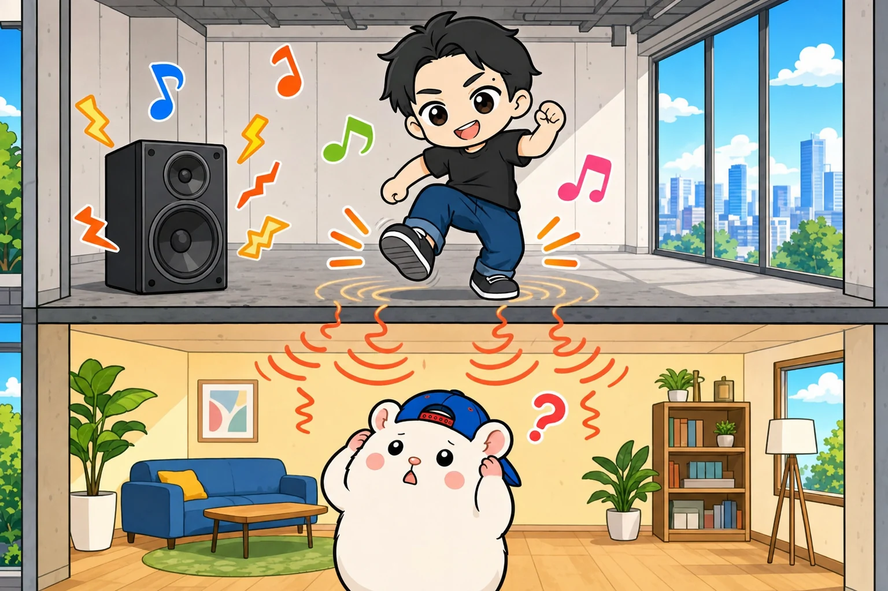
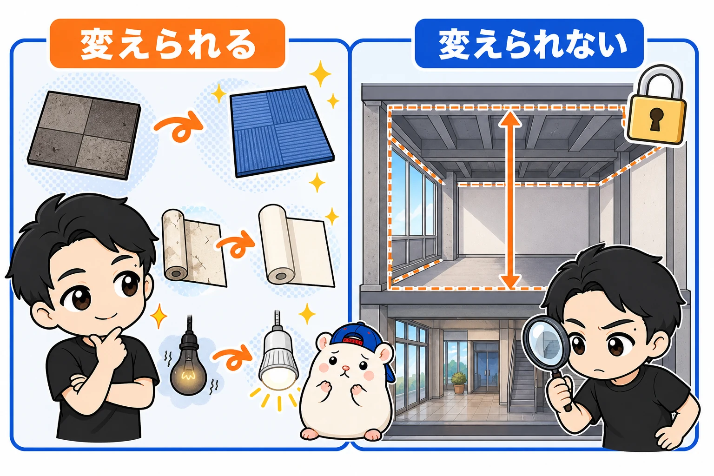
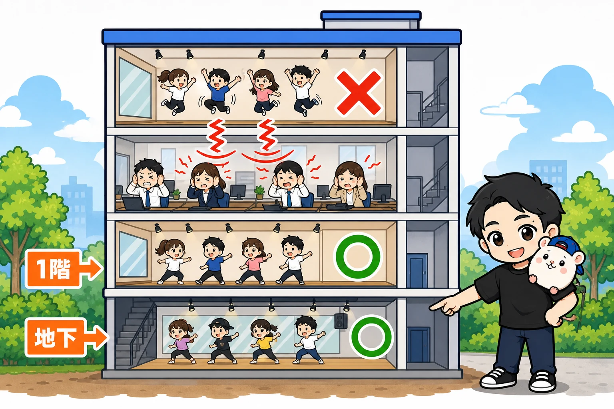
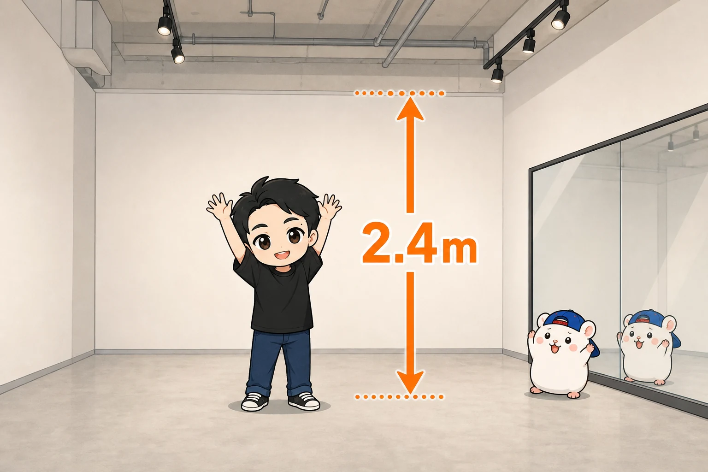
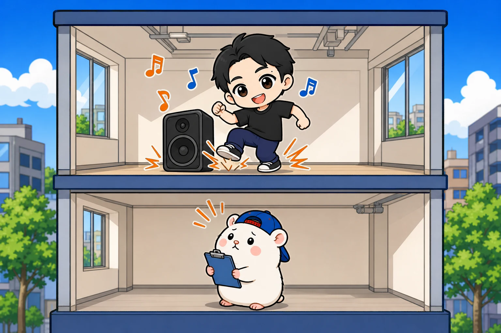
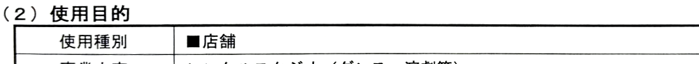
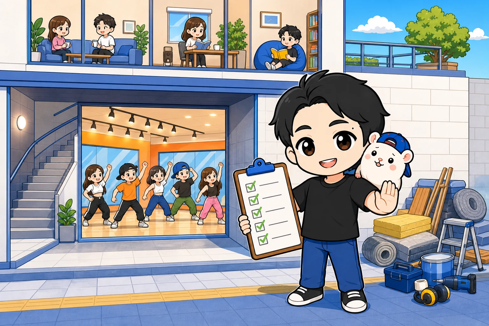

レンタルスペースで、ダンススタジオを始めたい。
そう思って検索すると、こんな記事がたくさん出てきます。
「ダンススタジオには防音工事が必要。費用は数百万円」
ぼくは、防音工事をしません。
レンタルスペースを累計23店舗出して、いちばん多いのがダンススタジオの11店舗です。
防音工事でなんとかするのではなく、工事がいらない物件を選ぶ。
これが、ぼくのやり方です。
今日は、その物件の条件を書きます。
1. なぜ、防音工事をしないのか
理由は2つです。
① 高い
防音工事は、それだけで数百万円の話になります。
ダンスのレンタルスタジオは、1時間1,000〜2,000円くらいで貸す商売です。
工事に数百万円かけると、元を取るまでが長くなりすぎます。
② 工事をしても、振動は止めきれない
こっちのほうが大事です。
ぼくは、利益が出ていた店を、騒音のクレームで閉めたことがあります。
3号店。
ビルの5階で、月の利益は25.7万円。
ダンスのレンタルスタジオ11店舗の中で、いちばん稼いでいた店です。
下の階に入っていたのは、楽器の教室でした。
防音ルームも完備されていました。
内見のときに、音や振動も確かめました。
「大丈夫だろう」
甘かったです。
ダンスは、音楽だけではありません。
跳ぶ。着地する。その振動が、床から下に伝わります。

防音は、空気を伝わる音には効きます。
でも、床を伝わる振動は別の話です。
2ヶ月ほど、下の階の方とやり取りしました。
でも、防音工事をしてもクレームは止まらないと判断して、閉めました。
騒音は、開業したあとでは、ほとんど打つ手がありません。
防げるのは、契約する前だけです。
2. 見るのは「あとから変えられないもの」だけ

物件を見るときの、いちばん大事な考え方です。
床がタイルカーペットでも、あとで貼りかえられます。
壁紙が古くても、照明が暗くても、あとからどうにでもなる。
でも、これは変えられません。
- 建物の構造
- 何階にあるか
- 下の階に、なにが入っているか
- 広さと、部屋の形
- 天井の高さ
防音工事をしないなら、この5つで、ほぼ決まります。
順番に書きます。
3. 構造と階 — 「下に部屋がない」がいちばん

構造は、鉄筋コンクリートか鉄骨。
木造は、ダメです。
音が、上にも下にも外にも漏れます。
鉄筋コンクリートか鉄骨の建物なら、気にするのは、ほぼ「下」だけです。
だから、下に部屋がない物件を選びます。
いちばんいいのは、地下。
次が、1階です。
地下は、ダンスのレンタルスタジオにとって、いちばんの場所です。
- 下に部屋がないので、振動の心配がない
- 音が外に漏れにくい
- 窓がいらない(日当たりが関係ない)
- 人気がないので、家賃が安いことが多い
ただし、地下は湿気に注意です。
カビのにおい、排水のにおいがしないか、内見のときに確かめます。
スマホの電波が入るかも、見ておきます。
1階は、ガラス張りの物件に注意してください。
音が外に漏れます。
外の音も、中に入ってきます。
お客さんが「自分たちの音も外に聞こえているんじゃないか」と気になってしまいます。
2階より上は、よほどの理由がないかぎり見送る
2階より上は、下の階に入っている人しだいです。
写真や図面だけでは判断できないので、最初は地下か1階にしぼってください。
たとえば、こんなときは話が別です。
下の階も、自分の店のとき。
ぼくの店では、2号店がそうです。
2号店は、1号店と同じ建物の上の階にあります。
4号店から8号店は、ビルを1棟まるごと借りて、1階から5階までを5つの店にしました。
下が自分の店なら、下の階からの苦情を心配しなくてすみます。
大事なのは、何階かではなく、下にだれがいるかです。
4. 広さ・形・天井・壁

広さは、教室で使うなら35㎡くらいから。
個人練習が中心なら、20㎡くらいでも成り立ちます。
図面の広さには、トイレや流しも入っています。
実際に踊れる広さは、もっとせまいと思ってください。
部屋の形は、長方形か正方形。
四角い部屋が、いちばん使いやすいです。
天井は、2.4m以上ほしいところです。
たまに、極端に天井が低い物件があります。
内見で、その場で腕を上にのばしてみてください。
天井にさわれそうなら、ダンスには低すぎます。
鏡を貼る、平らな壁があるか。
鏡は、平らな壁にしか貼れません。
窓や出っぱりがあると、壁を作りなおす工事がいります。
いちばんいいのは、最初から鏡が付いている物件です。
例えば、9号店は最初から幅5mの鏡が付いていたので、鏡代は0円でした。
鏡を業者さんに付けてもらうと、ぼくの別の店では、幅6.5mで53万円かかっています。
ちなみに、床と天井のあいだで固定する「つっぱり式」の鏡は、おすすめしません。
安くて工事もいりませんが、使っているうちにずれてきて、そのたびに直すのが本当に面倒でした。
ワンフロアに1店舗が基本。
となりに別のテナントがいると、大きな音楽が漏れます。
床は、気にしなくていい。
タイルカーペットでも、あとから貼れます。
見るのは、床が水平かどうかだけです。
5. 契約の前に、音を出して確かめる

条件がそろった物件が見つかっても、まだ契約はしません。
内見で、音を出します。
「となりが空いているから大丈夫」
「がんじょうそうな建物だから大丈夫」
見た目で決めてはいけません。
やり方は、こうです。
- スピーカーを持っていって、実際に音楽を大きな音で鳴らす(小さな音では意味がない)
- 床も、ドンドン踏み鳴らす(遠慮して、そっと見るだけの内見はしない)
- ほかのテナントがいれば、下の階でどう聞こえるかまで確かめさせてもらう
下の階に何が入っているかも、聞いておきます。
少しでも気になったら、その物件はやめます。
防音工事でなんとかしよう、とは考えません。
6. その前に、駅と「ダンスできますか」
物件の条件の前に、2つだけ。
① 駅から近いこと。
教室の生徒さんもリピーターさんも、駅からの距離には敏感です。
ぼくの11店舗は、全部が駅から歩いて5分以内です。
そして、ぼくは住宅地の駅に出します。
② 問い合わせで、最初に「ダンスできますか」と聞くこと。
ダンスのレンタルスタジオは、大家さんから見ると、音と振動が心配な使い方です。
だから、問い合わせの最初に業種を伝えて、できるかどうかを聞きます。

9号店の賃貸借契約書の一部。事業内容は「レンタルスタジオ(ダンス・演劇等)」です
ここでダメなら、内見に行く前に次へ進めます。
7. まとめ

- ぼくは防音工事をしない。工事がいらない物件を選ぶ
- 防音は空気の音には効くが、床を伝わる振動は止めきれない
- 見るのは、あとから変えられないものだけ(構造・階・下の階・広さと形・天井)
- 鉄筋コンクリートか鉄骨。地下がいちばん、次に1階。大事なのは、下にだれがいるか
- 天井は2.4m以上。鏡は最初から付いている物件がいちばん
- 契約の前に、音を出して確かめる。下の階でどう聞こえるかまで
条件を全部クリアする物件は、なかなか出てきません。
でも、それがこのジャンルの参入障壁です。
あなたが気になっている物件の下には、なにが入っていますか?
この条件を点数にして、物件を1件ずつ判定するツールを、本の付録にしました。
📘 『【きくりん式】レンタルスペースは「ダンススタジオ」で稼ぐ！完全ロードマップ』
ぼくの11店舗の実録と、駅の選び方・内見のチェックリストまで入っています。
第0部はまるごと無料で読めます。

販売価格は3部売れるごとに3,000円ずつ値上がりします（上限あり）。内容・最新価格は販売ページをご確認ください。
▼もう1つの副業、AI社員だけのeBay輸出店の実録🐹

▼ブログ(レンスペ×eBay、全記事まとめ)